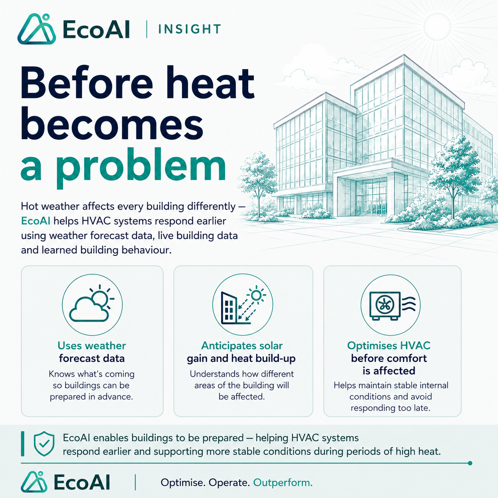
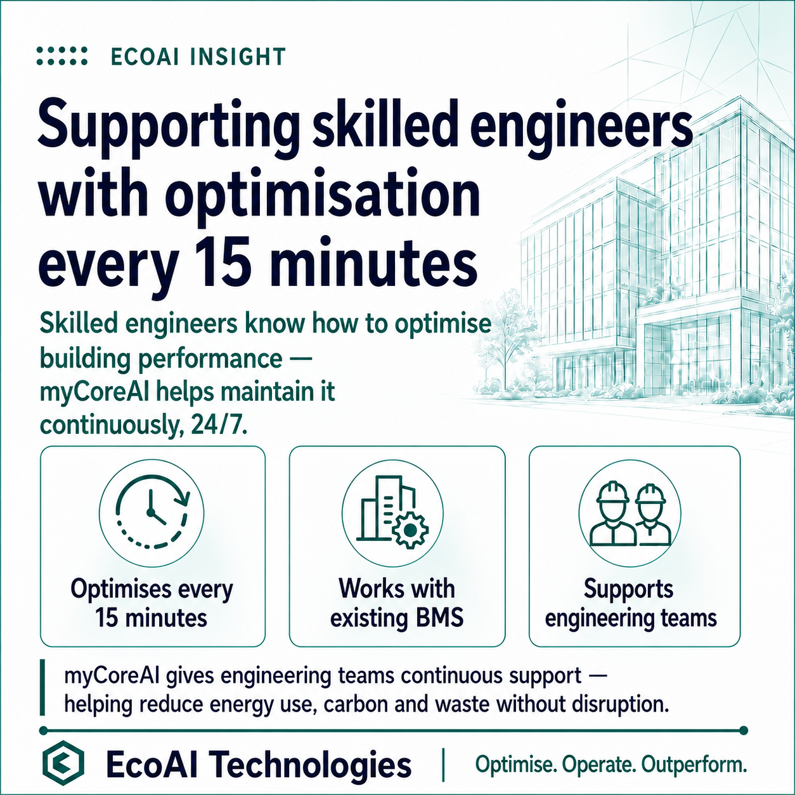
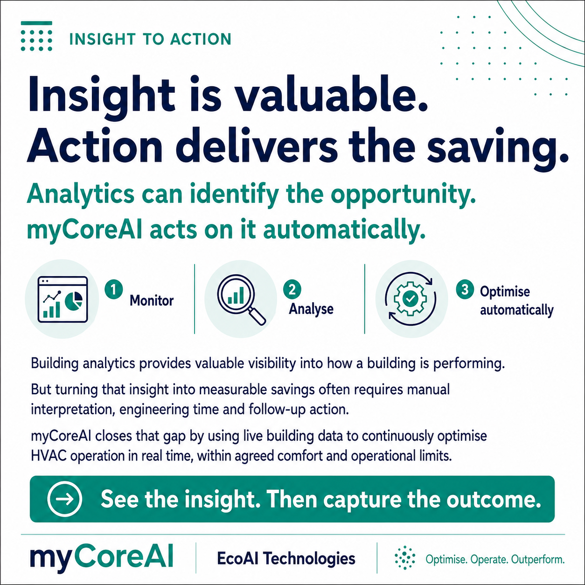
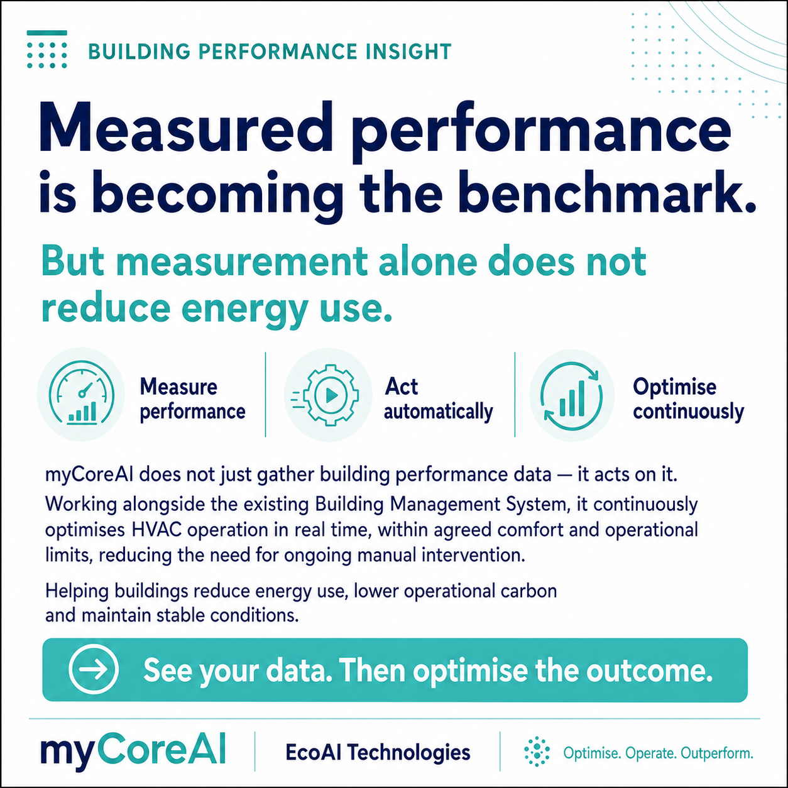

Before heat becomes a problem
Forecast-led optimisation helps the building respond before conditions drift, using weather data, building behaviour and agreed comfort limits to reduce unnecessary HVAC energy.
EcoAI Insights
Short explainers on how EcoAI helps existing buildings reduce HVAC energy through BMS-connected, comfort-first optimisation.
These insights are designed for estates, facilities, sustainability, finance and building controls teams who want to understand how AI optimisation supports existing systems and skilled engineers. myCoreAI is the optimisation platform/layer that helps EcoAI connect insight to controlled action through the existing BMS.
Practical ideas for improving HVAC performance without replacing the existing BMS.
Latest insights
A growing series of EcoAI insight cards covering existing BMS infrastructure, predictive optimisation, comfort, engineers and energy performance.

Forecast-led optimisation helps the building respond before conditions drift, using weather data, building behaviour and agreed comfort limits to reduce unnecessary HVAC energy.

EcoAI does not replace engineers, FM teams or BMS contractors. It supports them by adding a continuous optimisation layer that helps existing systems run more efficiently.

Building data is useful, but savings are only delivered when insight becomes controlled action through the existing BMS.

EcoAI focuses on measurable outcomes, using reporting and baseline comparison to show energy, comfort and carbon impact clearly.
Next step
EcoAI can review suitable buildings, identify likely HVAC optimisation opportunities and outline a practical route to implementation using existing BMS infrastructure.